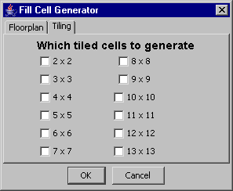

1
010101
011001
100101
101010
4
00000000
10000000
01000000
11000000
| f = (a and b and (not c)) or ((not b) and (not a)) |
| g = (a and c) or ((not a) and (not c)) |
4 3
1 1 0
0 0 X
1 X 1
0 X 0
Unlike other fill generators, Electric's fill generator creates cells containing power and ground grids of specified layers, usually starting at Metal-2. These cells can also be arrayed into tile cells to cover larger areas. When Metal-1 is filled, the generator will cover the area with cap transistors whose functionality is to prevent voltage drops in the power grid.
The Fill dialog has two tabs: "Floorplan" and "Tiling". The Floorplan section specifies what is inside of a single fill cell. The Tiling section specifies how those cells are arrayed.
The Floorplan section offers two fill techniques: Template Fill and Fill Cell (not yet available). Template Fill generates fill cells of a given width and height. The default values reflect the minimum spacing rules given by the technology. The "Reserved Space" section lets you specify which layers of metal will be in the fill cells. These metal layers alternate running horizontally and vertically (the "Even layer orientation" controls which layer runs horizontally first).
| The fill cell will have four metal wires running in each direction: the outer two are Ground and the inner two are Power. The spacing between the inner two is given in the "Vdd Space" section next to the selected metal layer. The spacing between the ground wires and the edge is half of the "Gnd Space" value. The spacing between the power and ground wires is the minimal design-rule spacing for that layer of metal. The width of the wires is then adjusted to fill the remaining space in the cell. |  |
|  | The Tiling section lets you request arrays of fill cells to be generated. Check the desired sizes and they will be generated. Each generated array cell will contain the specified-size array, and it will be internally wired. |
There are two ways to run the tool: (1) by using a documentation cell containing the fill instructions and issuing the Stitch-Based Fill Generator from doc input command and (2) by opening all the relevant cells in different windows and using the Stitch-Based Fill Generator from open windows command.
When using a documentation cell to control the fill, different combinations of fill cells can be generated at once. It also has the advantage of being easy to re-run when the fill operation must be iterated. Each line in the documentation cell follows the syntax below:
|
fillCellName (< options >) : cell1(< option >) cell2(< option >) ... cellN(< option >) @exports = {layerName1, layerName2} |
Where option(s) can be "W" and/or a sequence of title sizes (e.g. 2x2, 4x4, 3x4). The option "W" allows the insertion of exports in the middle of the lowest metal arcs and different tile sizes can be arrayed depending on the area to cover.
By default all input cells are flattened unless option is "I". In that case, the input cell will be instantiated instead of being flattened in the fill cell.
The @exports line specifies that exports in the generated cells should use only the layers specified. If this directive is not present, exports are in the two top layers.
Here is an example:
fillAB: fillA fillB
| ||||||||||||||||||||||||||||||||||||||||||||
The gate layout generator recognizes these gates from the Purple and Red libraries:
| ||||||||||||||||||||||||||||||||||||||||||||